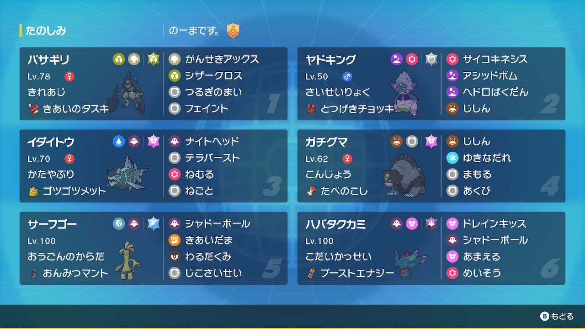

動画
パーティ画像

努力値
バサギリ @ きあいのタスキ
きれあじ / ようき
145-187(252)-116(4)-x-90-150(252)
ガラルヤドキング @ とつげきチョッキ
さいせいりょく / おだやか
202(252)-x-100-131(4)-178(252)-50
イダイトウ♀ @ ゴツゴツメット
かたやぶり / ずぶとい
227(252)-100-128(252)-121(4)-95-98
ガチグマ @ たべのこし
こんじょう / のんき
237(252)-160-166(204)-x-107(52)-63
サーフゴー @ おんみつマント
おうごんのからだ / ひかえめ
163(4)-x-142(212)-174(44)-112(4)-135(244)
ハバタクカミ @ ブーストエナジー
こだいかっせい / おくびょう
162(252)-x-107(252)-156(4)-155-170
きれあじ / ようき
145-187(252)-116(4)-x-90-150(252)
ガラルヤドキング @ とつげきチョッキ
さいせいりょく / おだやか
202(252)-x-100-131(4)-178(252)-50
イダイトウ♀ @ ゴツゴツメット
かたやぶり / ずぶとい
227(252)-100-128(252)-121(4)-95-98
ガチグマ @ たべのこし
こんじょう / のんき
237(252)-160-166(204)-x-107(52)-63
サーフゴー @ おんみつマント
おうごんのからだ / ひかえめ
163(4)-x-142(212)-174(44)-112(4)-135(244)
ハバタクカミ @ ブーストエナジー
こだいかっせい / おくびょう
162(252)-x-107(252)-156(4)-155-170